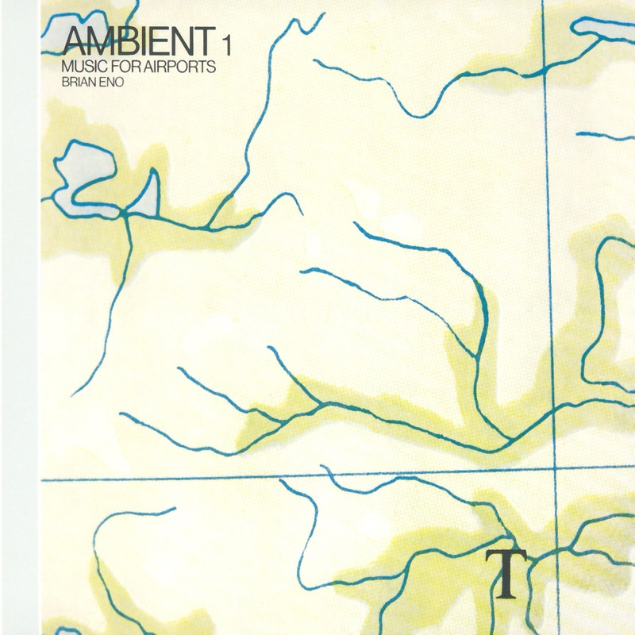

Ambient 1: Music for Airports
机场音乐
1978 · Ambient 系列第一张
一张反复在听的唱片。它很慢，但并不静止，里面一直有东西在动，只是彼此不同步。听着它，仿佛能看见机场里的人群：有的地方多，有的地方少，走过的轨迹留下各种残影。你不需要盯住任何一个人，却能感觉到整个空间在慢慢变化。Eno 要做的不是一段要求你专注的音乐，而是一个空间，让注意力可以进去、离开、再回来。
Tracks
- 011/117:21
几个钢琴音被截取、放慢、循环，并不真正“发展”。听久了，大脑不再等下一句是什么。试试不跟着音符走：听一个音出现，再听它消失，然后等下一个音从空间里浮出来。Eno 写的其实是音符之间的时间。
- 022/18:54
几段人声循环，每段长度都不一样，谁也不能整除谁。第一次相遇之后就错开，下一次又是另一种组合，很久都回不到最初的状态。像机场里偶尔相遇又分开的人。
- 031/212:07
- 042/29:38
Credits
- Brian Eno — 创作、制作
- Robert Wyatt 等 — 钢琴片段（1/1）
Notes
Brian Eno：音乐系统的设计者
1948 年生于英国，学的是视觉艺术，不是学院派作曲。早年在 Roxy Music 负责合成器和声音处理，后来成为 David Bowie、Talking Heads 等人的重要制作人。贯穿他一生的不是某一种风格，而是一个想法：作曲不一定要把每个音都写出来，也可以设计一套规则，让音乐自己生长。这就是后来所说的生成音乐（generative music）。
为什么是机场
1970 年代后期，Eno 在德国科隆—波恩机场候机，看到的是很漂亮的现代主义建筑，听到的却是普通的背景轻音乐。他开始想：这样的空间应该听到什么？机场里有秩序、技术、速度、等待和孤独，也有对飞行隐约的不安。他不想用欢快的背景音乐假装什么事都没有，而想做一种能容纳这些情绪的声音。更早还有一次意外：他车祸后在家休养，朋友放了一张竖琴唱片，音量很低，他起不了身去调，音乐就和窗外的声音融在了一起。音乐从舞台中央退了下来，成了环境的一部分。
错开的循环
这张唱片用了很多长度不一样的磁带循环，比如一段约 23 秒、一段约 25 秒、一段约 29 秒。它们第一次相遇后就错开，每次重叠都是新的组合。所以它的结构不是“起、承、高潮、结束”，而是一些声音偶尔相遇、又分开。
工业社会里的一块慢空间
这张唱片诞生在 1978 年。它不是田园时代的慢，而是高度工业化的社会开始反思工业化生活之后，在高速文明内部人为造出来的一块慢空间。飞机每小时飞 900 公里，人却可能在机场坐上两个小时：技术越来越快，等待却没有消失。近五十年后，在一个节奏更快、信息更密集的时代再听，它也许比当年更合时宜，因为今天最稀缺的，是一段没有任何东西急着要你回应的时间。
之后的三条河流
Eno 没有发明安静的音乐，Satie、Cage、La Monte Young、Terry Riley 都早已探索过环境、重复和偶然。但他给它起了名字 Ambient Music，并提出一条原则：这种音乐既可以被忽略，也值得被认真听。此后的影响大致有三条。一是电子音乐：1990 年代的 Aphex Twin、The Orb、Biosphere、Stars of the Lid。二是新古典和后极简：Max Richter 的 Sleep、Ólafur Arnalds、Hania Rani，这些音乐先设计一种状态，再设计旋律。三是生成音乐：游戏里的动态配乐、空间音频装置，乃至今天的 AI 音乐，都和这套想法有亲缘关系。